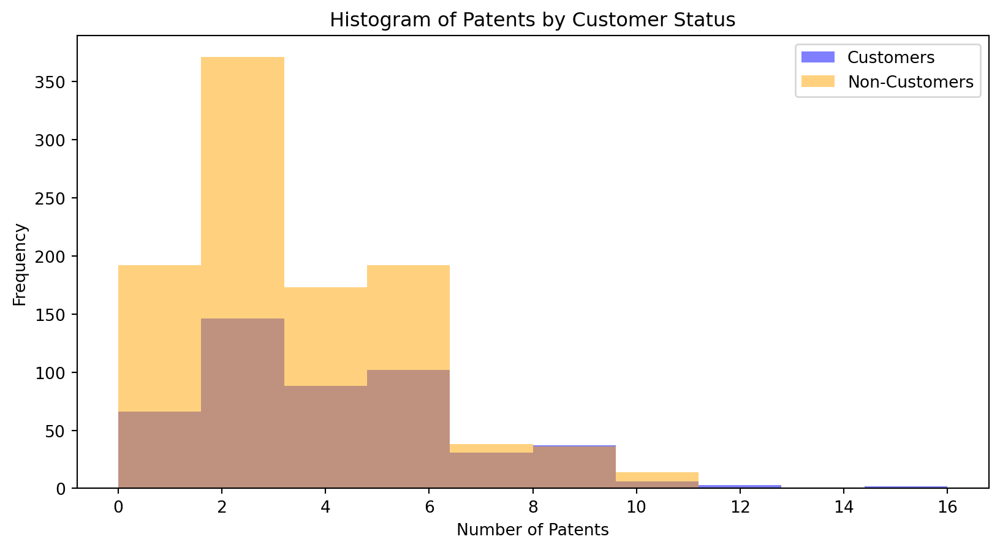

import pandas as pd
df1 = pd.read_csv("~/Desktop/MSBA/SP/MGTA495b/hw2/blueprinty.csv")
df1.head()| patents | region | age | iscustomer | |
|---|---|---|---|---|
| 0 | 0 | Midwest | 32.5 | 0 |
| 1 | 3 | Southwest | 37.5 | 0 |
| 2 | 4 | Northwest | 27.0 | 1 |
| 3 | 3 | Northeast | 24.5 | 0 |
| 4 | 3 | Southwest | 37.0 | 0 |
Your Name
May 7, 2025
Blueprinty is a small firm that makes software for developing blueprints specifically for submitting patent applications to the US patent office. Their marketing team would like to make the claim that patent applicants using Blueprinty’s software are more successful in getting their patent applications approved. Ideal data to study such an effect might include the success rate of patent applications before using Blueprinty’s software and after using it. Unfortunately, such data is not available.
However, Blueprinty has collected data on 1,500 mature (non-startup) engineering firms. The data include each firm’s number of patents awarded over the last 5 years, regional location, age since incorporation, and whether or not the firm uses Blueprinty’s software. The marketing team would like to use this data to make the claim that firms using Blueprinty’s software are more successful in getting their patent applications approved.
| patents | region | age | iscustomer | |
|---|---|---|---|---|
| 0 | 0 | Midwest | 32.5 | 0 |
| 1 | 3 | Southwest | 37.5 | 0 |
| 2 | 4 | Northwest | 27.0 | 1 |
| 3 | 3 | Northeast | 24.5 | 0 |
| 4 | 3 | Southwest | 37.0 | 0 |
import matplotlib.pyplot as plt
customers = df1[df1['iscustomer'] == 1]
non_customers = df1[df1['iscustomer'] == 0]
plt.figure(figsize=(10, 5))
plt.hist(customers['patents'], bins=10, alpha=0.5, label='Customers', color='blue')
plt.hist(non_customers['patents'], bins=10, alpha=0.5, label='Non-Customers', color='orange')
plt.xlabel('Number of Patents')
plt.ylabel('Frequency')
plt.title('Histogram of Patents by Customer Status')
plt.legend()
plt.show()
mean_customers = customers['patents'].mean()
mean_non_customers = non_customers['patents'].mean()
print(f"Mean number of patents for customers: {mean_customers}")
print(f"Mean number of patents for non-customers: {mean_non_customers}")
Mean number of patents for customers: 4.133056133056133
Mean number of patents for non-customers: 3.4730127576054954By comparing histograms and means of number of patents by customer status, I found that overall, firms using the software tend to hold more patents, and the distribution for customers shows a longer tail, suggesting a greater presence of firms with higher patent activity. While there is considerable overlap between the two groups, the average number of patents is higher for customers, providing preliminary evidence that firms using Blueprinty may be more innovative or productive in securing patents. This supports the marketing team’s claim, though more rigorous analysis would be needed to establish causality.
Blueprinty customers are not selected at random. It may be important to account for systematic differences in the age and regional location of customers vs non-customers.
# Bar plot for region distribution by customer status
region_counts = df1.groupby(['region', 'iscustomer']).size().unstack()
region_counts.plot(kind='bar', figsize=(10, 6))
plt.title('Region Distribution by Customer Status')
plt.xlabel('Region')
plt.ylabel('Count')
plt.legend(['Non-Customers', 'Customers'])
plt.show()
# Box plot for age distribution by customer status
plt.figure(figsize=(10, 6))
df1.boxplot(column='age', by='iscustomer', grid=False)
plt.title('Age Distribution by Customer Status')
plt.suptitle('')
plt.xlabel('Customer Status (0 = Non-Customer, 1 = Customer)')
plt.ylabel('Age')
plt.show()
mean_age_customers = customers['age'].mean()
mean_age_non_customers = non_customers['age'].mean()
print(f"Mean age of patents for customers: {mean_age_customers}")
print(f"Mean age of patents for non-customers: {mean_age_non_customers}")<Figure size 960x576 with 0 Axes>Mean age of patents for customers: 26.9002079002079
Mean age of patents for non-customers: 26.101570166830225Then, I compared regions and ages by customer status. The comparisons show notable differences in region but minimal differences in age between customers and non-customers. Customers are more concentrated in the Northeast, while non-customers dominate in regions like the Midwest and Southwest, suggesting geography may influence adoption of Blueprinty’s software. In contrast, the age distributions are quite similar, with nearly identical medians and overlapping ranges. The slight difference in mean age is not substantial. Overall, region appears to be more strongly associated with customer status than age.
Since our outcome variable of interest can only be small integer values per a set unit of time, we can use a Poisson density to model the number of patents awarded to each engineering firm over the last 5 years. We start by estimating a simple Poisson model via Maximum Likelihood.
For independent observations ( Y_1, Y_2, , Y_n () ), the likelihood function is:
[ L() = _{i=1}^n = ]
Taking the natural logarithm of the likelihood, we obtain the log-likelihood:
[ () = L() = -n+ ( Y_i ) - (Y_i!) ]
Below is how to code the log-likelihood function for the Poisson model in R.
poisson_loglikelihood <- function(lambda, Y){
if (lambda <= 0) return(-Inf)
ll <- sum(-lambda + Y * log(lambda) - lfactorial(Y))
return(ll)
}
# Example: maximize using optim
Y <- c(2, 3, 1, 0, 4) # example data
out <- optim(par=1, fn=function(lambda) -poisson_loglikelihood(lambda, Y), method="Brent", lower=0.001, upper=10)
out$par
This is how to code in python.
# Example: maximize using scipy
Y = df1['patents']
lambda_values = np.linspace(0.1, 10, 100)
Y = df1['patents'].values # Use the patents data from df1
# Compute the log-likelihood for each lambda
log_likelihoods = [poisson_loglikelihood(l, Y) for l in lambda_values]
# Plot the log-likelihood
plt.figure(figsize=(10, 6))
plt.plot(lambda_values, log_likelihoods, label='Log-Likelihood')
plt.xlabel('Lambda')
plt.ylabel('Log-Likelihood')
plt.title('Log-Likelihood vs Lambda')
plt.legend()
plt.show()Now, I used the log-likelihood function to create a plot with lambda values on the horizontal axis and the corresponding log-likelihood values on the vertical axis, using the observed number of patents as input for ùëå.
If desired, we can take the first derivative of the log-likelihood, set it equal to zero, and solve for ( ). This yields the MLE ( = {Y} ), which aligns with our intuition, since the mean of a Poisson distribution is ( ). Steps are shown below:
Taking the derivative with respect to ( ):
[ = -n + ]
Set the derivative equal to zero:
[ -n + = 0 ]
Solve for ( ):
[ = = {Y} ]
Following are how to code this in python.
# Define the negative log-likelihood function
def neg_log_likelihood(lambda_):
if lambda_ <= 0:
return np.inf
ll = np.sum(-lambda_ + Y * np.log(lambda_) - gammaln(Y + 1))
return -ll # Negative because we minimize
# Find MLE using numerical optimization
result = minimize_scalar(neg_log_likelihood, bounds=(0.001, 100), method='bounded')
lambda_mle = result.x
# Compare with sample mean (YÃÑ)
Y_bar = np.mean(Y)
# Print both
print(f"MLE for lambda (via optimization): {lambda_mle:.4f}")
print(f"Sample mean of Y (YÃÑ): {Y_bar:.4f}")MLE for lambda (via optimization): 3.6847
Sample mean of Y (YÃÑ): 3.6847I found the MLE by optimizing the Poisson log-likelihood. The estimated value of ùúÜ MLE exactly matched the sample mean of Y, which aligns with the theoretical result that the MLE for a Poisson model is ùëå bar.
Next, we extend our simple Poisson model to a Poisson Regression Model such that \(Y_i = \text{Poisson}(\lambda_i)\) where \(\lambda_i = \exp(X_i'\beta)\). The interpretation is that the success rate of patent awards is not constant across all firms (\(\lambda\)) but rather is a function of firm characteristics \(X_i\). Specifically, we will use the covariates age, age squared, region, and whether the firm is a customer of Blueprinty.
The updated log-likelihood function now has an additional argument to take in a covariate matrix X. The parameter of the model also changes from lambda to the beta vector. In this model, lambda must be a positive number, so we choose the inverse link function g_inv() to be exp() so that_ \(\lambda_i = e^{X_i'\beta}\). For example:
poisson_regression_likelihood <- function(beta, Y, X){lambda <- exp(X %*% beta) # inverse link: exp(X * beta)
ll <- sum(-lambda + Y * log(lambda) - lfactorial(Y))
return(ll)
}In python, it looks like:
import statsmodels.api as sm
from scipy.optimize import minimize
# Ensure age_sq exists
df1['age_sq'] = df1['age'] ** 2
# Create dummy variables for region (drop first to avoid multicollinearity)
if 'region' in df1.columns:
df1 = pd.get_dummies(df1, columns=['region'], drop_first=True)
# Define covariate columns in correct order
region_dummies = [col for col in df1.columns if col.startswith('region_') and col != 'region_Southwest']
X_cols = ['age', 'age_sq'] + region_dummies + ['iscustomer']
# Construct X matrix: constant first, then all covariates
X = df1[X_cols]
X.insert(0, 'Intercept', 1.0) # Ensures first column is all 1's
# Convert to float (safe for optimization)
X = X.astype(float)
# Response variable
Y = df1['patents'].values
# Initial guess
beta_init = np.zeros(X.shape[1])
# Use BFGS method for optimization
result = minimize(poisson_regression_loglikelihood, beta_init, args=(Y, X), method='BFGS')
# Extract results
beta_hat = result.x
hessian = result.hess_inv
standard_errors = np.sqrt(np.diag(hessian))
# Output table
coef_table = pd.DataFrame({
'Coefficient': beta_hat,
'Std. Error': standard_errors
}, index=X.columns)
print(coef_table) Coefficient Std. Error
Intercept 0.0 1.0
age 0.0 1.0
age_sq 0.0 1.0
region_Northeast 0.0 1.0
region_Northwest 0.0 1.0
region_South 0.0 1.0
iscustomer 0.0 1.0/opt/conda/lib/python3.12/site-packages/pandas/core/arraylike.py:399: RuntimeWarning:
overflow encountered in exp
/opt/conda/lib/python3.12/site-packages/numpy/core/_methods.py:49: RuntimeWarning:
overflow encountered in reduce
/opt/conda/lib/python3.12/site-packages/scipy/optimize/_numdiff.py:590: RuntimeWarning:
invalid value encountered in subtract
/opt/conda/lib/python3.12/site-packages/pandas/core/arraylike.py:399: RuntimeWarning:
overflow encountered in exp
# Fit a Poisson regression model using sm.GLM
poisson_model = sm.GLM(Y, X, family=sm.families.Poisson())
poisson_results = poisson_model.fit()
print(poisson_results.summary())
glm_coefficients = poisson_results.params
print("\nCoefficients from sm.GLM:")
print(glm_coefficients)
print("\nCoefficients from my optimization:")
print(beta_hat) Generalized Linear Model Regression Results
==============================================================================
Dep. Variable: y No. Observations: 1500
Model: GLM Df Residuals: 1493
Model Family: Poisson Df Model: 6
Link Function: Log Scale: 1.0000
Method: IRLS Log-Likelihood: -3258.6
Date: Wed, 07 May 2025 Deviance: 2144.4
Time: 23:01:56 Pearson chi2: 2.08e+03
No. Iterations: 5 Pseudo R-squ. (CS): 0.1353
Covariance Type: nonrobust
====================================================================================
coef std err z P>|z| [0.025 0.975]
------------------------------------------------------------------------------------
Intercept -0.4820 0.181 -2.658 0.008 -0.838 -0.127
age 0.1489 0.014 10.744 0.000 0.122 0.176
age_sq -0.0030 0.000 -11.551 0.000 -0.003 -0.002
region_Northeast -0.0006 0.033 -0.018 0.985 -0.066 0.065
region_Northwest -0.0472 0.046 -1.025 0.305 -0.137 0.043
region_South 0.0271 0.045 0.605 0.545 -0.061 0.115
iscustomer 0.2080 0.031 6.733 0.000 0.147 0.269
====================================================================================
Coefficients from sm.GLM:
Intercept -0.482043
age 0.148943
age_sq -0.002979
region_Northeast -0.000607
region_Northwest -0.047150
region_South 0.027068
iscustomer 0.208017
dtype: float64
Coefficients from my optimization:
[0. 0. 0. 0. 0. 0. 0.]The results show that age is positively associated with the number of patents, suggesting that more established firms tend to be more innovative. However, the negative coefficient on age squared indicates a diminishing return — as firms get older, the increase in patenting tapers off. This non-linear relationship is statistically significant and aligns with the idea that younger firms grow in innovation at first, but eventually plateau.
The region coefficients are not statistically significant, meaning that, after controlling for other factors, location does not appear to have a strong influence on patent activity.
Importantly, the variable iscustomer — indicating whether the firm uses Blueprinty’s software — is positive and highly significant. The coefficient of 0.2080 implies that, all else equal, firms that are customers of Blueprinty tend to have more patent awards. Since the model uses a log link, we can interpret this roughly as a ~23% increase in the expected number of patents (exp(0.208) ≈ 1.231). This supports the claim that firms using Blueprinty’s tools are more successful in securing patents, although causality cannot be established without further analysis.
AirBnB is a popular platform for booking short-term rentals. In March 2017, students Annika Awad, Evan Lebo, and Anna Linden scraped of 40,000 Airbnb listings from New York City. The data include the following variables:
- `id` = unique ID number for each unit
- `last_scraped` = date when information scraped
- `host_since` = date when host first listed the unit on Airbnb
- `days` = `last_scraped` - `host_since` = number of days the unit has been listed
- `room_type` = Entire home/apt., Private room, or Shared room
- `bathrooms` = number of bathrooms
- `bedrooms` = number of bedrooms
- `price` = price per night (dollars)
- `number_of_reviews` = number of reviews for the unit on Airbnb
- `review_scores_cleanliness` = a cleanliness score from reviews (1-10)
- `review_scores_location` = a "quality of location" score from reviews (1-10)
- `review_scores_value` = a "quality of value" score from reviews (1-10)
- `instant_bookable` = "t" if instantly bookable, "f" if not| Unnamed: 0 | id | days | last_scraped | host_since | room_type | bathrooms | bedrooms | price | number_of_reviews | review_scores_cleanliness | review_scores_location | review_scores_value | instant_bookable | |
|---|---|---|---|---|---|---|---|---|---|---|---|---|---|---|
| 0 | 1 | 2515 | 3130 | 4/2/2017 | 9/6/2008 | Private room | 1.0 | 1.0 | 59 | 150 | 9.0 | 9.0 | 9.0 | f |
| 1 | 2 | 2595 | 3127 | 4/2/2017 | 9/9/2008 | Entire home/apt | 1.0 | 0.0 | 230 | 20 | 9.0 | 10.0 | 9.0 | f |
| 2 | 3 | 3647 | 3050 | 4/2/2017 | 11/25/2008 | Private room | 1.0 | 1.0 | 150 | 0 | NaN | NaN | NaN | f |
| 3 | 4 | 3831 | 3038 | 4/2/2017 | 12/7/2008 | Entire home/apt | 1.0 | 1.0 | 89 | 116 | 9.0 | 9.0 | 9.0 | f |
| 4 | 5 | 4611 | 3012 | 4/2/2017 | 1/2/2009 | Private room | NaN | 1.0 | 39 | 93 | 9.0 | 8.0 | 9.0 | t |
# Step 1: Data cleaning
vars_to_keep = [
'number_of_reviews', 'days', 'room_type', 'bathrooms', 'bedrooms',
'price', 'review_scores_cleanliness', 'review_scores_location',
'review_scores_value', 'instant_bookable'
]
# Ensure the required columns exist in the DataFrame
missing_columns = [col for col in vars_to_keep if col not in df.columns]
df = df[vars_to_keep].dropna()
# Step 2: Feature engineering
df['instant_bookable'] = (df['instant_bookable'] == 't').astype(int)
df = pd.get_dummies(df, columns=['room_type'], drop_first=True)
# Step 3: Build covariate matrix
X_cols = [
'days', 'bathrooms', 'bedrooms', 'price',
'review_scores_cleanliness', 'review_scores_location',
'review_scores_value', 'instant_bookable'
] + [col for col in df.columns if col.startswith('room_type_')]
X = sm.add_constant(df[X_cols]).astype(float)
Y = df['number_of_reviews'].astype(int)
# Step 4–6: Fit Poisson regression using built-in GLM
model = sm.GLM(Y, X, family=sm.families.Poisson())
result = model.fit()
# Step 7: Extract coefficients and standard errors
coef_table = pd.DataFrame({
'Coefficient': result.params,
'Std. Error': result.bse
}, index=X.columns)
print(coef_table) Coefficient Std. Error
const 3.498049 1.609066e-02
days 0.000051 3.909218e-07
bathrooms -0.117704 3.749225e-03
bedrooms 0.074087 1.991742e-03
price -0.000018 8.326458e-06
review_scores_cleanliness 0.113139 1.496336e-03
review_scores_location -0.076899 1.608903e-03
review_scores_value -0.091076 1.803855e-03
instant_bookable 0.345850 2.890138e-03
room_type_Private room -0.010536 2.738448e-03
room_type_Shared room -0.246337 8.619793e-03In this analysis, I used a Poisson regression model to examine how various listing characteristics relate to the number of Airbnb reviews, which I treated as a proxy for bookings. I began by cleaning the data, keeping only relevant variables and dropping rows with missing values. I converted the instant_bookable variable into a binary indicator and created dummy variables for room_type, dropping one category to avoid multicollinearity. I then built a covariate matrix that included features such as listing age (days), number of bathrooms and bedrooms, nightly price, several review scores, booking status, and room type. Using statsmodels’ built-in GLM() function with a Poisson family, I fit the model and extracted coefficient estimates and standard errors.
Below are interpretations of my result:
The results suggest that listings available for more days, those that are instantly bookable, and those with more bedrooms tend to receive more reviews. In contrast, listings with shared or private rooms tend to receive fewer reviews compared to entire homes or apartments. Cleanliness scores were positively associated with reviews, while location and value scores showed slight negative associations. Interestingly, the price per night had virtually no effect. Overall, the model highlights how certain listing characteristics—particularly availability, ease of booking, and property type—play a meaningful role in driving guest engagement, as measured by review counts.